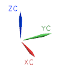

Glossary
C
constraint
(Modeling) Relationship which defines the relative position between objects. Assembly constraints are used to position components in an assembly.

(Sketching) Geometric and dimensional design rules applied to sketch geometry.
CSYS
Abbreviation for coordinate system.
D
detail view
Child view with circular, rectangular, or user–defined boundary which contains an enlarged portion of an already existing drawing view.
drafting view
Also referred to as drawing member view.
Standard orthographic view created from a model view, or a view of 2D curves that represent model geometry. A drafting view contains drawing objects. It is listed in the Part Navigator under the associated Sheet node.
drawing sheet
View that contains drafting views and drawing border objects. Drawing sheet views are listed in the Part Navigator under the associated Drawing node.
drawing view
Empty view used to manually create a sketch instead of displaying an associative base view of a model.
M
master model
Component file that contains the defining geometry that is referenced by an assembly, drawing, or manufacturing part. For example, in NX, the master model is normally kept in one file, and a drawing in another. When the master model is modified, the drawing views can be updated to reflect the changes.
S
section view
View defined by cutting the model geometry with one or more cut planes to view the planar geometry on the cutting planes.
V
view boundary
Boundary used to limit the geometry displayed in a view.
W
work coordinate system (WCS)
Movable coordinate system. The coordinates of the WCS are called work coordinates and are denoted by XC, YC, ZC axes. The XC-YC plane is called the work plane.
